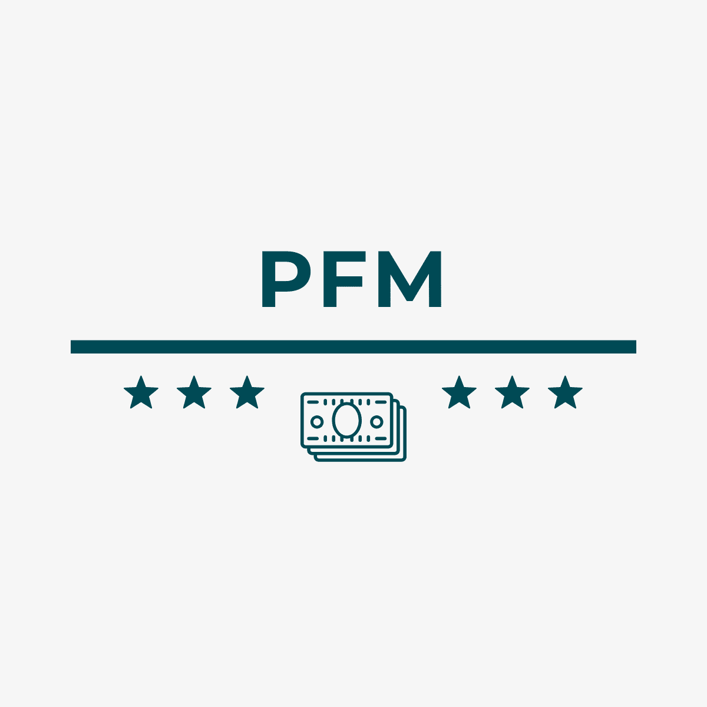

<nz-layout class="layout">
  <nz-sider>
    <div class="logo">
      

      <div class="user-info">
        <strong>Root</strong>
      </div>
    </div>

    <ul nz-menu nzTheme="dark" nzMode="inline">
      <li nz-menu-item routerLink="/">
        <span nz-icon nzType="dashboard"></span>
        <span>Dashboard</span>
      </li>

      <li nz-menu-item routerLink="/income">
        <span nz-icon nzType="fund"></span>
        <span>Income</span>
      </li>

      <li nz-menu-item routerLink="/expense">
        <span nz-icon nzType="fall"></span>
        <span>Expense</span>
      </li>
    </ul>
  </nz-sider>

  <!-- Content layout main to display the content -->
  <nz-layout class="right-layout">
    <nz-content>
      <div class="inner-content">
        <router-outlet></router-outlet>
      </div>
    </nz-content>
  </nz-layout>
</nz-layout>
